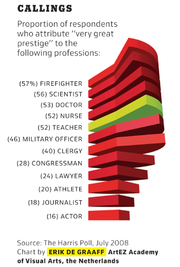
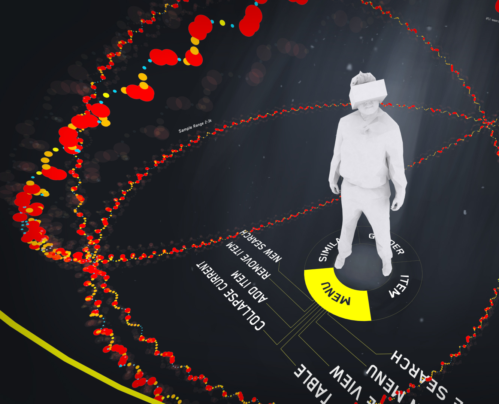

Vizuelizacija
Veljko Petrović
Januar, 2023
O vizuelizaciji
Proizvodnja uvida
Čemu?
- Vizuelizacija, usko definisana, je korišćenje slika da prikažemo kvantitativne podatke.
- No, mogli bi da posmatramo i širu definiciju vizuelizacije, gde je to tehnologija koja služi da se ljudskom umu olakša uvid u podatke koji su ili previše obimni, ili previše kompleksni za lako razumevanje.
Proces vizuelizacije u najopštijem smislu
- Generisanje sirovih podataka
- Obrada podataka u neki novi oblik
- Prikazivanje podataka korisniku
Opšta definicija
- Ova definicija je veoma široka, relativno ne-standardna, ali odgovara našim potrebama i prirodna je.
- Ako je prirodna, zašto to zovemo vizuelizacija?
- Istorijski razlozi.
- Najviše informacija mi apsorbujemo kroz oči. Imamo vrlo oštar vid i kao rezultat, kada pokušavamo da u ljudski um ubacimo što više podataka, prirodno je da to odaberemo kao medijum.
- Valja napomenuti da po ovoj definiciji, ‘vizuelizacija’ obuhvata čak i stvari kao što su deskriptivni statistički pokazatelji.
Osobine vizuelizacija u najširem smislu.
- Gubitak. Proces vizuelizacije uvek gubi neke podatke, to jest, mi dobijamo poboljšan uvid na račun smanjene oštrine podataka. Nikada nećete imati oštriji prikaz od ogromne tabele.
- Kompresija. Proces vizuelizacije često komprimuje višestruke dimenzije varijacije u originalnom skupu podataka u jednu dimenziju finalne vizuelizacije.
- Transfer. Komprimovani podaci smanjene oštrine se, da bi vizualizacija mogla da radi, tipično prebacuju iz jednog domena prikaza u drugi, klasično iz numeričkog u vizuelni.
- Pristrasnost. Nema tako čega kao neutralne vizuelizacije. Svaka vizuelizacija je rezultat mnogobrojnih izbora: izbora tehnike, parametara tehnike, podataka koji se prikazuju, šta se žrtvuje, i tako dalje. To znači da svesno ili nesvesno utičemo na uvid koji korisnik može pokupiti iz vizuelizacije.
Formalizacija klasičnih vizuelizacija
- Pozivajući se na rad Karpendejla iz 2003, moguće je sve vizuelizacije u klasičnom smislu (to jest, mapiranja na mirne slike) konceptualizovati kao mapiranje dimenzija skupa podatka na vizuelne promenljive.
- Vizuelne promenljive su korisna apstrakcija koja opisuje kako, psihološki gledano, mi apsorbujemo vizuelne informacije.
Vizuelne promenljive

Kako napraviti lošu vizuelizaciju?
- Postoji nesrećna tendencija da se izabere tehnika i da se onda ta tehnika nahrani ogromnim skupom podataka i rezultujuća slika šta god da je pokaže korisniku.
- Još gore, postoje manipulativne vizuelizacije koje su način da se slikom efektno laže.
Kako napraviti lošu vizuelizaciju?
Pravila HCI nas neće ostaviti na miru
- Ljudski um jednostavno ne može da istovremeno poredi više od negde između 5 i 11 stvari.
- To što smo prikazali korisniku 100 stvari ne znači da korisnik vidi 100 stvari.
- Još crnje, jako je loša ideja koristiti vizuelizacije bazirane na podeli celine (čuvena “pita”) ako nije odmah jasno šta je celina.
- Ovde, recimo, prikazujemo uvid u… šta?
Kako napraviti lošu vizuelizaciju?
To što ga Microsoft podržava…
- …ne znači da treba da ga koristimo.
- 3D pie chart je spektakularno loša ideja.
- Prvo, zašto koristiti sekcije kruga (što teže procenjujemo), a ne sekcije štangle (što lakše procenjujemo?).
- Mnogo bitnije, zašto onda da zahtevamo od korisnika da ceni veličine objekata u tri dimenzije u perspektivi?
Kako napraviti lošu vizuelizaciju—Stil američke politike
Kako ono beše…
- …rade procenti?
- Postoje dve mogućnosti da objasne prethodni… kreativni crtež:
- U pitanju je bila anketa sa više mogućih odgovora koja nije adekvatno obrađena pred vizuelizaciju.
- Bavljenje američkom političkom scenom je korozivno za ljudski um.
Kako napraviti lošu vizuelizaciju?
Ima sedam vizuelnih promenljivih…
- …to ne znači da sve treba i da se koriste.
- Prvo, ovo prenatrpa previše stvari na isti dijagram—iako je moguće uraditi vrlo zanimljive stvari sa multidimenzionalnom vizuelizacijom, ona mora biti pažljiva.
- Ovo nije pažljivo.
- Naročito nezgodno jeste što se koriste veličine sfera da predstave neku dimenziju. Što je to problem?
- Da li poredimo prečnike sfera, površine sfera, površine 2D projekcija sfera, ili zapremine sfera?
Kako napraviti lošu vizuelizaciju?
Osnovna nekompetentnost
- Ovde je slučaj vrlo česte greške koju ja volim da zovem “Excel sindrom.”
- Da, ja mogu da selektujem manje-više šta god hoću u Excel-u i pritisnem dugme koje generiše bilo koji grafikon.
- To ne znači da treba da to radim.
- U ovom slučaju izabran je način prikaza koji zahteva da obe ose imaju smisleno uređenje ne bi li se prikazala linearna-u-delovima veza između dve nezavisno varirajuće promenljive.
Kako napraviti lošu vizuelizaciju?
Problem sa 3D
- Jako je privlačno raditi vizuelizaciju u 3D-u
- Izgleda bolje, impresivnije.
- Daje nam celu jednu ekstra dimenziju da se sa njom igramo.
- Problem? Mi ne koristimo volumetrijske prikaze.
- Korisnik neće videti tri dimenzije, videće 2 koje su rezultat projekcije.
- Drugim rečima, uveli ste kompresiju na mala vrata, i to na način koji ne možete da koristite.
Kada koristiti 3D?
- Napredan prikaz (VR?)
- Kada prikazujemo nešto što je stvarno u 3D
- Kada, minimalno, omogućavamo kvalitetnu interaktivnost.
Kako napraviti lošu vizuelizaciju?
Laži, proklete laži, i…
- …vizuelizacije.
- Pravilo koje može da vam pomogne u životu: Ako vam neko prikaže vizuelizaciju gde ose nisu jasno obeležene laže vas.
- Čak i da su obeležili da je 0 y-ose u stvari… rekao bih negde oko 5.5 miliona ili tako nešto, to je i dalje pokušaj prevare da učini razliku proporcijalno većom.
Kako napraviti lošu vizuelizaciju?
Ovo se dešava…
- …kada date dizajneru da se bavi vizuelizacijom.
- Procenti su procenti… nečega? Ne znamo čega.
- Prikazani su delovima oblika potpuno ne-uniformnog oblika. Da skinemo procente, ko bi mogao da proceni vrednosti?
- Oblik (dominanta vizuelni element!) ne nosi apsolutno nikakve podatke. Što je to figura čoveka? Što da ne!
- Koji uvid možete da dobijete iz ovoga?
Kako napraviti lošu vizuelizaciju?
Šta mapa znači?
- NIŠTA!
- Imamo grafikon koji je svakome jasan koji je ovde predstavlja potpuno drugačiju stvar.
- Ovo je ekvivalent toga da, kada neko nešto broji, da konstantno uzvikujete nasumične brojeve u nadi da ćete da ih zbunite.
Kako napraviti lošu vizuelizaciju?
Ok, ali ovde mapa nešto znači? Da?
- Ovo je neverovatno čest problem: ako napravite vizuelizaciju distribucije nekog socijalnog fenomena geografski ono što 99% vremena proizvedete je apsolutno isti grafikon, tj. grafikon gustine naseljenosti.
- Podaci moraju da se prvo transformišu da prikazuju ono što bi nekoga, u stvari, zanimalo, a to je da li ima više šta god da je to što merimo u odnosu na stanovništvo.
Kako napraviti lošu vizuelizaciju?

…uh…
- Biću iskren, ne znam ni šta je ovo.
- Ali je objavljeno u NYT-u.
Kako napraviti lošu vizuelizaciju?
GRAPHS DO NOT WORK THAT WAY
- Prvo, ako pogledate metodologiju, naslov ne odgovara sadržaju.
- Drugo sugeriše linearni odnos između dve stvari koje ne mogu da budu u linearnom odnosu a i nisu.
- Šta za ime sveta je osa ‘jezik?’
- Treće jedina osa sa brojevima na sebi je kalibrisana na opseg 4.96%-22.26%. Vrlo korisno.
Šta čini dobru vizuelizaciju?
- Uvid.
- Fundamentalno, ono što čini vizuelizacije korisnim jeste da iz njih ekstrahujemo uvid u nekakve podatke koji, inače, ne bi mogli da dobijemo lako.
- Sve ostalo je sekundarno.
Primer uvida
Zašto ovaj primer?
- Zato što je ružan.
- Uprkos tome što je prilično ružan, uz samo malo zurenja, sada je apsolutno jasno šta se dešava u podacima koje prikazujemo.
- To je važna lekcija: vizuelizacije mogu da budu lepe, čak prelepe, ali to je samo bonus.
- Ono što je bitno jeste da nose informacije efektno.
Ako je prioritet izgled pre svega drugog?

Alati za vizuelizaciju
- Sve je moguće, naravno, uraditi tako što učitate, npr. OpenGL i crtate šta želite da crtate.
- No, postoje alati koji mogu da pomognu.
- Za klasične vizuelizacije ja predlažem ggplot2 koji postoji za programski jezik R.
- Za opštu HPC vizuelizaciju, preporučujem VTK.